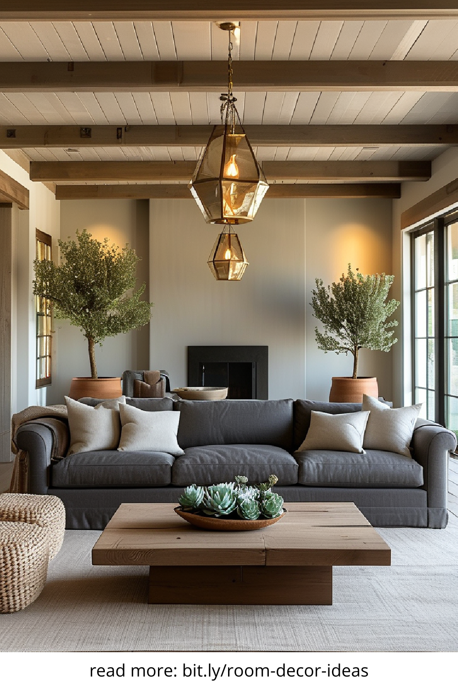
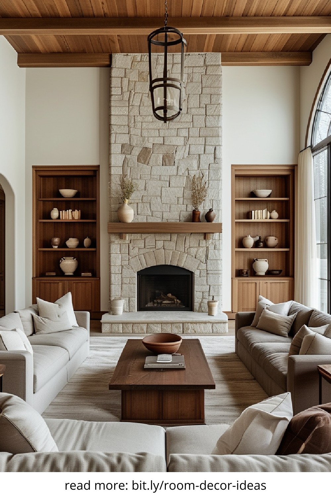
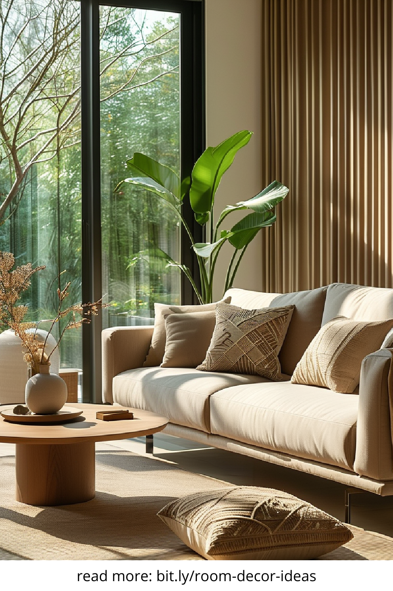
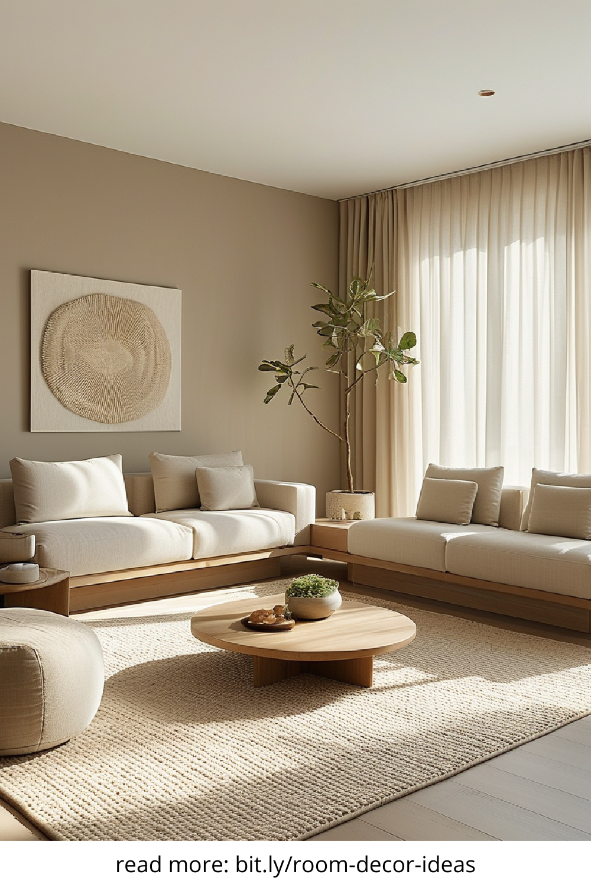

In today’s fast-paced world, home is not just a shelter—it’s a sanctuary. A space that mirrors our inner peace, values, and aspirations. Warm and minimalist home decor combines simplicity with comfort, offering a serene atmosphere while maintaining functional elegance. This design trend continues to rise in popularity for its clean aesthetics and emotional warmth, making it ideal for modern living.
Warm minimalism blends the calming effects of minimal design with cozy, inviting elements. Unlike cold or sterile minimalism, warm minimalism embraces natural textures, soft lighting, and earthy tones. Think of it as decluttering with heart—keeping only what brings value and joy while making the home feel grounded and welcoming. This approach promotes mindfulness, balance, and harmony in both visual and emotional spaces.
A crucial element in warm minimalist decor is the color scheme. Neutral tones like beige, taupe, warm whites, and soft greys form the base, while warm accents like terracotta, ochre, or muted blush add personality. These hues reflect light naturally and create a soothing backdrop, making rooms feel open and airy yet emotionally rich. The goal is to foster a sense of calm without sacrificing visual interest.
In warm and minimalist home decor, every piece counts. Rather than filling a space with multiple decor items, focus on fewer but high-quality, meaningful pieces. Handmade pottery, artisan furniture, or heirloom textiles can serve both function and aesthetic appeal. Prioritize craftsmanship and sustainability—this not only enhances the character of the space but also aligns with eco-conscious living values.
Wood, linen, wool, clay, and stone are key materials in this style. These natural elements introduce texture and tactile richness to minimal spaces. A simple wooden bench, a linen throw, or a ceramic vase can elevate the room’s ambiance. Their imperfect beauty and organic origins bring a soulfulness to the decor, enhancing both visual warmth and emotional connection to the space.
Lighting is more than just functional—it’s emotional. Warm and minimalist interiors use soft, diffused lighting to shape mood and depth. Opt for warm LED bulbs, paper lanterns, or woven pendant lamps to create gentle illumination. Layering light sources—combining overhead, task, and accent lighting—allows control over ambiance and brings warmth into every corner of your home.
A major principle of minimalism is intentionality. Decluttering doesn’t mean removing everything—it means editing thoughtfully. Store or donate what no longer serves you and keep only those items that support your lifestyle and bring joy. Use smart storage solutions like built-in shelves, hidden compartments, or multi-functional furniture to maintain a clean and organized aesthetic.
Even the most minimal space should feel personal. Warm minimalism encourages curated self-expression. Display a few favorite books, meaningful art, travel mementos, or plants that resonate with you. These subtle touches break the monotony of minimalism and remind us that home is a reflection of the soul, not just a showroom for style.
Plants play a vital role in warm and minimalist decor. Not only do they purify the air, but they also add organic beauty and color. Choose low-maintenance indoor plants like snake plants, rubber trees, or pothos for elegance and ease. Natural greenery complements neutral palettes and creates a peaceful, biophilic environment that connects you to the outdoors.
Beyond aesthetics, warm minimalism offers psychological and lifestyle advantages. A clutter-free space reduces stress and improves focus. The warmth encourages relaxation and fosters meaningful interaction with your surroundings. It also promotes sustainable living, as it encourages conscious consumption and long-lasting design choices over trends or impulse buys.
Warm and minimalist home decor is more than a design choice—it’s a lifestyle philosophy. It invites you to simplify without sacrifice, to embrace comfort without clutter, and to live with intention. Whether you're redesigning a single room or transforming your entire home, this timeless trend offers peace, beauty, and purpose—all wrapped in one harmonious aesthetic.
   